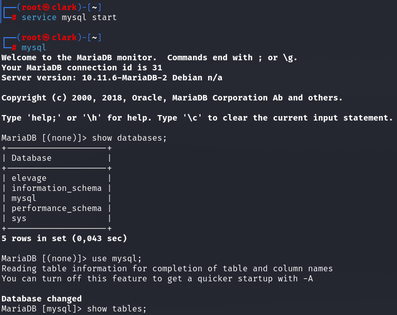
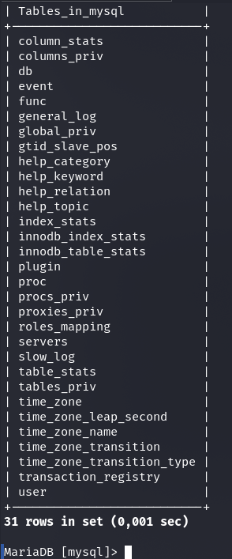

MySQL
Formation suivi sur openclassroom sur l'administration des bases de donnees avec MySQL, cette
formation enseigne les bases des codes SQL, la creation des bases de donnees, des tables et a
faire des requettes complexes impliquant l'usages des clefs primaires et secondaires.

